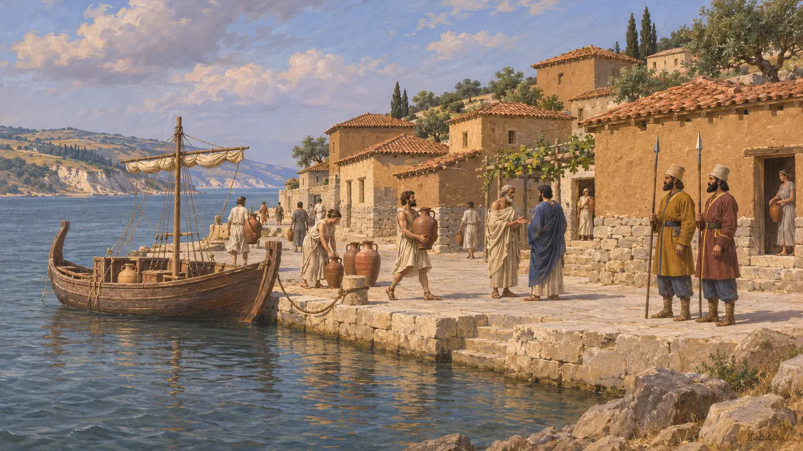
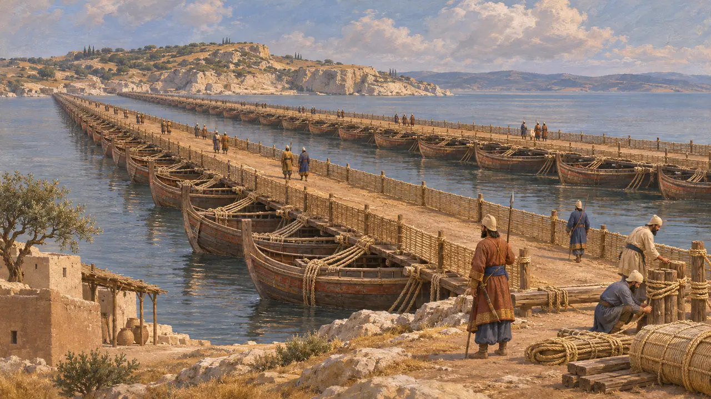
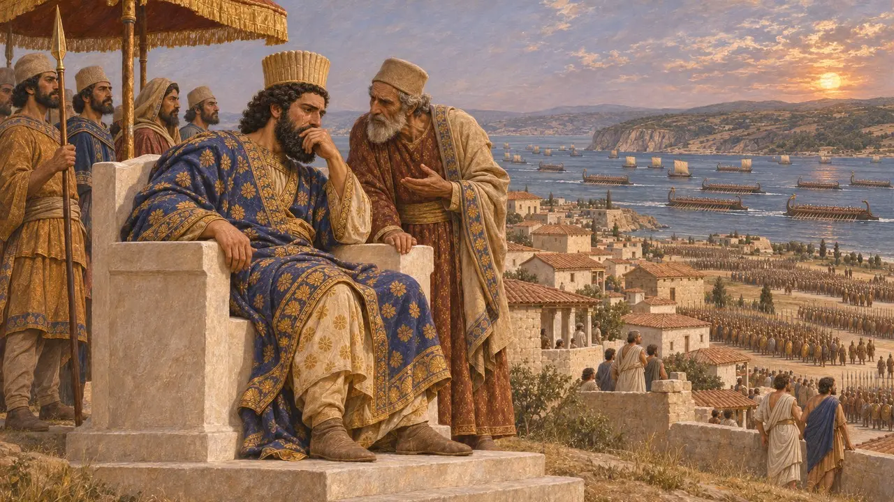
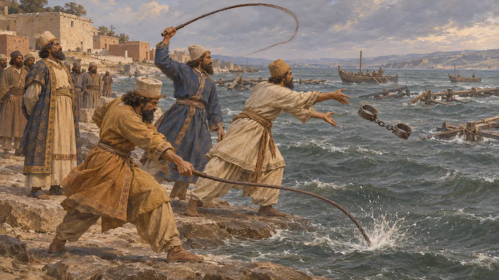
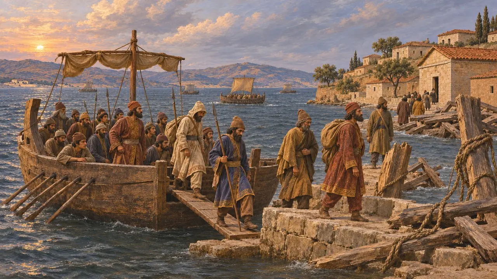

آبیدوس شهری یونانی در کرانهٔ آسیایی هلسپونت بود، در یکی از باریکترین نقاط تنگه. در سال 480 پ.م. مهندسان خشایارشا سرِ آسیایی دو پل قایقی او را در اینجا مهار کردند، و شاه پیش از گذر به اروپا از تپهای بر فراز شهر سپاه و ناوگانش را سان دید.
در بازی: بازی آبیدوس را جایی نشان میدهد که خشایارشا بر هلسپونت پل زد. این با گفتهٔ هرودوت همخوان است که سر آسیایی پلها را در آبیدوس و سر اروپایی را بر دماغهای نزدیک سستوس مینهد.

شهری میلتوسی بر کرانهٔ تنگه
روایت باستانیاسترابون و توکودیدس آبیدوس را کوچنشینی از میلتوس میدانند و استرابون میافزاید که گوگس، شاه لیدیه، اجازهٔ این سکونت را داد. در روزگار داریوش، جباری محلی بر آن فرمان میراند: هرودوت از دافنیس آبیدوسی در شمار فرمانروایان یونانیای یاد میکند که از پل شاه بر ایستر پاسداری میکردند. در شورش ایونیه، آبیدوس به شورشیان پیوست و به گفتهٔ هرودوت، داوریسس، سردار پارسی، آن را همراه با دیگر شهرهای هلسپونت بازپس گرفت.
Strabo, Geography 13.1.22; Thucydides, book 8; Herodotus 4.138; Herodotus 5.117

پلهای سال 480 پ.م.
روایت باستانیهرودوت میگوید پلها از آبیدوس تا دماغهای سنگلاخ بر کرانهٔ اروپایی میان سستوس و مادیتوس کشیده میشدند، گذرگاهی که او پهنایش را هفت استادیون میداند. توفانی جفت نخست را درهم شکست. پلهای بازساخته بر ردیفهایی از کشتیها استوار بودند، به شمارش او حدود 360 کشتی در یکی و 314 در دیگری، که با طنابهایی از کتان و پاپیروس به هم بسته شده بودند و راهی از تخته و خاک بر رویشان گسترده بود.
Herodotus 7.33-36

سان دیدن شاه بر فراز شهر
روایت باستانیهرودوت میگوید که مردم آبیدوس بر تپهای تختی از سنگ سفید ساخته بودند و خشایارشا از فراز آن سپاهش و مسابقهای میان کشتیهایش را تماشا کرد. گویند چون تنگه را پر از کشتی دید، بر کوتاهی عمر آدمی گریست، و هرودوت گفتوگویی دراز در همین باره میان خشایارشا و عمویش اردوان میآورد. این گفتوگو قطعهای ادبی و پرداخته است و بهتر است آن را تأمل خود هرودوت بدانیم، نه گزارشی از سخنانی که بهراستی گفته شده است.
Herodotus 7.44-52

کیفر دادن تنگه
مورد مناقشههرودوت میگوید که پس از توفان، خشایارشا فرمان داد هلسپونت را سیصد تازیانه بزنند و یک جفت پابند در آن بیفکنند، و سازندگان پل را گردن بزنند. برخی مورخان میپذیرند که کرداری واقعی پشت این داستان بوده است، شاید آیینی در برابر آبهای دشمنخو، و برخی دیگر آن را افسانهای یونانی میدانند که برای نمایاندن گستاخی شاهانه ساخته شده است. هیچ منبع پارسی از آن یاد نمیکند.
Herodotus 7.35; P. Briant, From Cyrus to Alexander, 2002

عقبنشینی و پیامدها
روایت باستانیبه گفتهٔ هرودوت، پس از سالامیس سپاه به تنگه رسید و دید پلها را توفانها ویران کردهاند، پس با کشتی به آبیدوس گذشت. در سال 479 پ.م.، پس از میکاله، ناوگان یونانی برای بریدن پلها به آبیدوس رفت و دریافت که پلها پیشتر از میان رفتهاند. آنگاه لئوتیخیدس و پلوپونزیان به خانه بازگشتند، اما آتنیان به فرماندهی کسانتیپوس ماندند تا سستوس را در کرانهٔ مقابل محاصره کنند.
Herodotus 8.117; Herodotus 9.114
منابع
- Herodotus, Histories, book 7
- Herodotus 8.117; 9.114
- Strabo, Geography 13.1.22
- Thucydides, book 8
- P. Briant, From Cyrus to Alexander, 2002